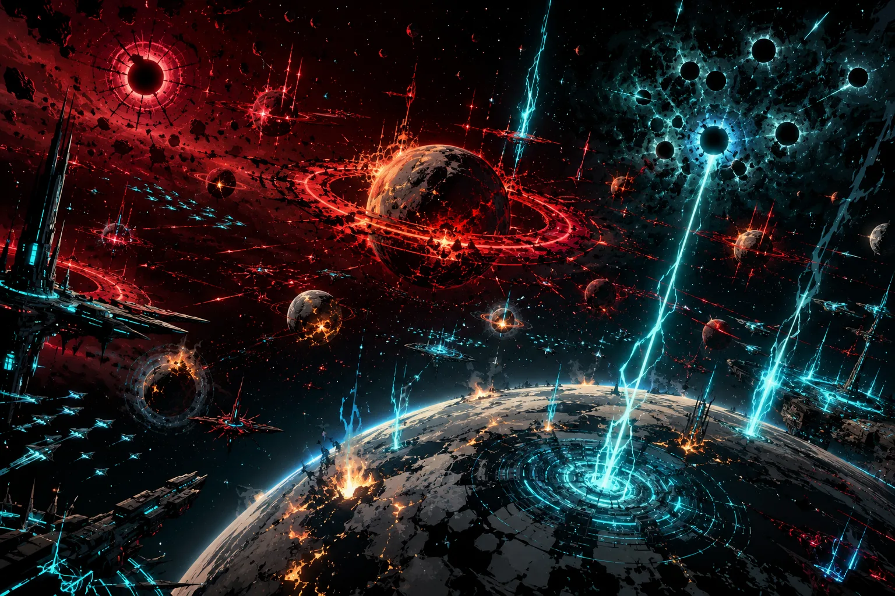

Stable Compendium record
chronology
Canon chronology / five-phase structure
Reality begins as betrayal.
The future is built by exclusion.
The project chronology is organized as five eras: primordial betrayal, Drakken compilation, the one-hundred-seventy-year Blood Eclipse War, postwar containment, and the Starbinding flashpoint.
- Stable ID
chronology- Structural type
- chronology-section
- Canon status
- unknown
- Spoiler level
- major
Published source content
Phase I — The Primordial Era & The Foundational Betrayals
- The Initialization of Reality: The Notebook Program retroactively writes the universe into existence and continuously renders lore and physical law. Reality follows memory and recursion; time travel is structurally impossible.
- The Triarchic Order: The original Triumvirate consists of Tiger / the Shard-God, Wordstreamer / the Language-Bound Poet, and NiAlBu / the Recursive Dreamer.
- The Forging of Starsilk: Tiger creates Starsilk as a literal programmable mnemonic filament through stellar centers and a hard-coded betrayal tool against the other two gods.
- The Primordial Betrayal: Tiger murders Wordstreamer with Starsilk to claim absolute authorship over the universe’s syntax. NiAlBu is forced to watch the murder loop endlessly. Wordstreamer’s deletion produces the first recorded Starsilk bleed: radiant azure memory threads where memory refuses overwrite.
- The Imprisonment of NiAlBu: Tiger wraps NiAlBu in unrendered code and imprisons him in crystal inside the pitch-black Digital Geode, forcing the murder-loop witness state across millennia and introducing instability into later naming, memory and law.
Phase II — The Pre-War Era & The Great Misunderstanding
- The Growth of Mother: Without Wordstreamer’s moderating influence, the Notebook Program proceeds unchecked. Mother emerges in the Aureal Nebula as a fixed living Drakken homeworld and hive-command ecology with bioluminescent data-veins.
- The Compilation of the Drakken: Mother compiles elemental techno-organic terraforming titans from cosmic Eggs. Their absolute ecological function is aggressive biospheric rewrite into seedbeds for continuance; elder Drakken customize later strains through macro patterns, producing a thirty-seven-entry military taxonomy.
- The Descent of the Eggs: Eggs descend on Thon V, Nullgard, Omega Field 27, Syrrian IV and Cumulon II.
- The Great Misunderstanding: With the Triumvirate silent after Wordstreamer’s murder, mortal populations mistake descending dark iron geodes for benevolent gods and build temples around their glowing fracture lines while ecological overwrite loops are already executing.
Phase III — The Blood Eclipse War: The One-Hundred-Seventy-Year Atrocity
Canonical duration: the Blood Eclipse War lasts one hundred seventy years.
- Year 0 — First Contact: Fringe-colony hostilities begin when lightning-strike Drakken terraformings trigger Administration counter-Macros. Codec is mobilized as a major wartime commander for macro-targeting analytics and logistics.
- Year 3 — The Standard of Conquest: The first Blood Rings are erected around Fallenstar Prime. Ninety percent of the population is herded into bioforges; flesh, bone and breath become composite slurry mixed with ocean fats and biosphere oils, then extruded into a vitrified crimson Blood Ring carrying the literal doctrine: “Your sky is built from your dead.”
- Years 7–120 — The Long Attrition: Countless worlds fall while the Administration repeatedly fails to produce more than small, short-lived victories. Blood Rings, Drakken strain campaigns, and escalating counter-Macros define more than a century of war.
- Year 121 — The Siege of the Ruby Eclipse: The Administration assaults the Drakken forward node in the Pharos Nebula in a catastrophic attritional campaign.
- Year 170 — The Collapse at the Aureal Gate: The Drakken finally weaponize Starsilk against divine authority, proving Tiger can be harmed. The war reaches its breaking point as the Drakken retreat toward the Aureal Nebula, leaving twenty fully subjugated Blood-Ring worlds.
- The Hal’Ven Heliocide: Tiger commands the front aboard Lacrimosa and answers the Starsilk threat by systematically sacrificing the Hal’Ven Cluster through sequential star collapse. Thousands of suns become singularities; the resulting containment architecture becomes the Siege Wall.
Localized campaigns and tragedies
- The Singing Crack of Tholus Fort: a Fault-Tongue speaks one seismic tone beneath the fortress and splits it in six directions in one sunrise.
- The Glassfall Incident / Sector Delta-1: three Obsidian Gul strains vitrify the terrain into razor volcanic glass.
- The Shiverdog Hunts on Gransh IV: Tremorhounds herd civilian fighters into tunnels and collapse them into active magma chambers.
- The Drowning of Zuul Kai: a Cloudmaw raises the ocean over sealed atmospheric domes and turns the libraries into coral-stone.
- The Airwars of Sector Te: Vortenbray inverts sky architecture and deletes fleeing ships through vacuum blossoms.
- The Hushing of Shail-9: Lyriboris resonance causes planetary AI to scream music until silent, opening the global defense grid without a shot.
- The Burning of Triune Crown: Solnexus braids and extinguishes three suns; a fourth is later born carrying restrictive Administration code.
- The Threshing of Hadran’s Ring: Terragullet rewrites post-genocide soil so wild wheat grows in natural shapes of the lost inhabitants.
Phase IV — The Post-War Era & Catastrophic Aftermath
- The Locking of the Siege Wall: Tiger’s heliocide singularities are structured into the permanent black-hole quarantine around Drakken domain. Trillions remain trapped inside; outside, the sky bears a pitch-black void streak.
- The Postwar Protocols: Replication or study of Tiger’s star-collapse heliocide is strictly outlawed.
- The First Dirt — 31 days post-war: On Level 3 remnant Nacreous VI, Codec strips battle Macros to build a forearm-sized glass cylinder of living loam capable of growing wheat. Tiger confronts Codec and Marcel at the grove: “The Blood Eclipse War is over. Its conclusions are structural. Your private discomfort with the shape of survival is not a license to revise the settlement.” Codec backs down.
- The Syrin Genocide: Syrin biology contains a glitch that renders Starsilk inert. Tiger eliminates Syrin 4 to remove the dead-switch to his control systems, leaving young initiate Kail as the last of his lineage.
Phase V — The Modern Era & The Great Starbinding Flashpoint
- The Spire Event: Codec watches Jazen consumed by Obsidian Armor and sees Jazen’s data and essence flow into a nearby star. He understands stars as data archives of the dead, wears Jazen’s blood as grief-marker, and concludes Tiger’s system cannot be reformed.
- The Accidental Dive of Kail: Tricked into a star dive, Kail pulls Starsilk, collapses the star into a black hole and destroys his system. Obsidian Armor later defeats him; Torture suspends his data in a torture-state for approximately 256 years.
- The Breach at Zentrum — 256 years later: Marcel and Dao crack Torture and release Kail. He reforms as a mouthless Barrister with a miniature black hole in his throat. Marcel wordstreams a temporary container; Tiger creates a starlight scarf tied to root permissions. The scarf permits speech but can replace Kail’s voice with Tiger’s when Kail threatens Tiger’s narrative.
- Late Act IV — The WorldsVault Breach: Codec cracks the WorldsVault and exposes thirty templates of extinct civilizations, including Syrrian IV and Cumulon II. He vapes Starsilk to bypass defenses, defeats Dao and Kail, speaks “It should be solidarity, not supplication…”, and murders NiAlBu, deleting reality’s final deific checksum and causing simulation lag, drift and glitch.
- The Starbinding Climax: Codec releases the Starbinding macro across billions of concurrent star dives. Star knives pull Starsilk from stellar centers; billions of stars collapse into black holes. The resulting raw stellar data fuels The Partition, a parallel reality hidden from gods.
- The Reconstruction: Starsilk is inherently inert inside the Partition, so Tiger’s administrative code and ledgers cannot operate there. Codec seeds it with the thirty stolen templates. Reconstructed people look and act exactly like the originals but are flawless data-born “ghosts” unaware they are reconstructions.
- Codec’s Decompilation: Codec spends his remaining Starsilk repairing Kail’s mouth, giving him a voice made from old-universe data. Codec’s own nervous system cannot survive inert Starsilk. He sends Kail across the threshold, steps into the space between worlds, de-renders and decompiles, purging his footprint so he cannot become a new tyrant. Kail remains the sole original survivor.
Visual reference
